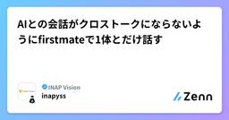

INAP Visionのフィード
https://zenn.dev/p/inapvision
おどろきが、未来を創る。 INAP Visionは、人間らしさと技術の力で、企業のDXを支援する課題解決型のDXカンパニーです。
フィード

Homebrewを何となく使っていた話
INAP Visionのフィード
はじめにbrew install というコマンドを、これまで何度も打ってきました。打った後でも、Brewfile を見れば自分が何を入れたかは分かります。そのくらいの理解はあったので、それ以上のことは特に気にしたこともありませんでした。ただ、改めてその「それ以上」を言葉にしようとすると、途端に怪しくなります。Brewfile に載っていないところで、依存として何が黙って入っているのかは、正直分かっていません。いま動いているコマンドが、本当にHomebrewの管理下にあるのかも、実は確かめたことがありませんでした。分かっているつもりのまま使い続けるのも落ち着かないので、実...
2日前

AIとの会話がクロストークにならないようにfirstmateで1体とだけ話す
INAP Visionのフィード
AIとの会話がクロストークにならないようにfirstmateで1体とだけ話す面倒臭がりなエンジニアのyssです。AIコーディングエージェントを1つ動かすのはもう当たり前になりましたが、「調査もしたい、バグ修正もしたい、監査もしたい」を同時に3つ並行でやろうとすると、途端に面倒になりませんか? 複数エージェントを並行させるときの面倒くささタスクごとにターミナルタブを開いて、それぞれに指示を出しに行く(タブ番兵になる)同じリポジトリで並行作業させたいのに、作業ディレクトリが競合しないようにworktreeを都度用意するタスクAで得た文脈をタスクBにコピペして伝える「あ...
7日前

Macターミナルで学ぶLinux基本コマンド入門
INAP Visionのフィード
はじめに今回は、Gitや環境構築に入る前の段階として「最低限これだけは覚えておかないと何もできない！」と思ったコマンドをまとめました。 1. なぜMacでLinuxコマンドが学べるの？Macの標準アプリ「ターミナル」は、Linuxとすごく近い仕組み（UNIX系）で動いているそうです。なので、Macの画面で打ったコマンドは、そのままLinuxサーバーを触るときにも役立つとのことでした。 ターミナルの開き方Command ⌘ + Space を同時に押してSpotlight検索を開く「ターミナル（Terminal）」と入力してEnter 2. 最初に覚えるべき必...
1ヶ月前
C#エンジニアのためのAWS超入門：Cognito/S3/DynamoDBを「お店の仕組み」で理解する
INAP Visionのフィード
こんにちは、中村と申します。最近C#とAWSの勉強を始めて「カタカナ用語が多くて全体像がつかめない…」と悩んでおりました。今回は、クラウド環境を本格的に触る前の段階だからこそ知っておきたい「AWS主要サービスの概念」を、身近な「お店の仕組み」に例えてまとめました。普段 C#（.NET）でWebアプリやAPIを書いている方が、「C#のあの機能・ライブラリに対応するものか！」と直感的にイメージできる構成にしています。 概念一覧：AWSサービスを「お店」に例えると？AWSの各種サービスは、1つの大きなWebショップ（お店）を運用するための仕組みと考えるとわかりやすいです。...
1ヶ月前
AIに聞く、先輩に聞く——生成AI時代の「質問の仕方」を考え直す
INAP Visionのフィード
AI時代に増えた新しい悩みClaude CodeをはじめとするAIコーディングツールが当たり前になり、若手エンジニアの学び方は明らかに変わりました。わからないことがあれば、まずAIに聞く。構文もエラーもアーキテクチャの説明も、数秒で「それらしい答え」が返ってきます。便利になった一方で、新しい悩みも生まれています。「これ、先輩に聞くべきことなのか、AIに聞けば済むことなのか」がわからなくなる瞬間があります。この記事では、その切り分けをどう考えればいいか、自分なりに整理してみます。 三つの行動を分けて考えるわからないことに直面したとき、取れる行動は大きく三つあります。1....
1ヶ月前
自作ツールを日常に定着させるために、作る前に考えた4つのこと
INAP Visionのフィード
できたもの私は普段のメモをObsidianで書いていて、vaultはiCloud Drive上に置いています。iPhoneからはObsidianアプリで、Macからはただのディレクトリとして触れる状態です。その前提で、iPhoneでYouTubeの料理動画を開いて、共有ボタンからショートカットを選ぶ。やることはそれだけで、数秒後にはvaultに材料と手順のMarkdownが1枚できています。保存先がiCloud Driveなので、そのままiPhoneのObsidianで開けます。台所で見るのはこのファイルのほうで、動画には戻りません。 使わなくなった自作ツール、ありま...
1ヶ月前
AIに全部聞いてた初心者が向き合い方を改めてみた【Flutter開発】
INAP Visionのフィード
はじめにFlutter初心者として業務の開発チームに参加してから、AIアシスタント（GitHub Copilot）を毎日のように使っています。現在は Claude Sonnet 4.6 をベースにした GitHub Copilot を主に使用しています。最初は「AIがあれば何でも解決できる」と思っていました。でも使い続けるうちに、 AIとの向き合い方を間違えると周りに迷惑をかける ことを身をもって体験しました。この記事では、実際の失敗談を通じて変化した AIの使い方3つのフェーズ をまとめます。※ 画像：AIと開発者のイメージ フェーズ1：AIに丸投げしていた...
1ヶ月前
LLMの仕組みを理解したつもりになれる今さら解説
INAP Visionのフィード
LLMの仕組みを理解したつもりになれる?今さら解説エンジニアのyssです。ChatGPTをはじめとしたLLM(大規模言語モデル)は、欠かせない存在になっています。しかし「どんな仕組みで動いているのか?」を理解している人は(私も含めて) 少ないのではないでしょうか?なので、LLMの仕組みについてちょっとだけ深掘りしてみたことをまとめてみます。 この記事のゴールLLMが文章を生成するまでの全体の流れをイメージできるようになる特に核となる技術である Attention（注意機構） が「何をしているのか」を直感的に理解する数式は最小限にして、「仕組み」の部分に注目してお...
2ヶ月前
「体調報告」をLLMで医療データ(HL7 FHIR)に標準化 → メンバーのHP・状態異常をステータス化管理する
INAP Visionのフィード
導入：チームの体調をステータス化エンジニアのmor不iです。実は先日、風邪を引いたまま自他を騙し騙しリモートワークをしていたのですが、普通に声枯れすぎてミーティングで心配されてしまいました。とはいえリモートワークが定着した今、メンバーのバイタリティ危機についてシグナルを検知する機会がめっきりなくなってしまいました。チームメンバーが体調不良を抱えたまま業務に当たっていても、マネージャーにとっては気づきづらい状況です。理想：メンバーの体調（HPや状態異常）を可視化する仕組みはできないか。チャットで各々が「昨日飲みすぎて頭痛いし、今日はエナドリで頑張ってる…」とポッと好きに呟くだ...
2ヶ月前
障害調査はAIに任せる時代。AWS DevOps Agent × Backlogで一次対応を自動化してみた
INAP Visionのフィード
はじめに：SSHやクエリでログを漁る障害調査、いつまで人間がやりますか？踏み台サーバーを経由してEC2にSSH接続しgrep や tail コマンドでログを追う。あるいはサーバーレス環境なら、CloudWatch Logs Insights や Amazon Athena でクエリを叩いて大量のログからエラーを血眼になって探す……。そんな泥臭い調査作業に疲弊していませんか？ログからエラー箇所を特定したら、今度は CloudTrail を開いて「直前に誰か設定を変更していないか？」と履歴を追いかけ、原因を推測してチケットを手動作成する。この一連の作業には、大きなタイムロスと精神的...
2ヶ月前
Claude Code のサブエージェントを、ビルトインからカスタムまで作って運用してみた
INAP Visionのフィード
動機と発見公式ドキュメントを読むだけでは、サブエージェントが実際どう挙動し、どれだけ効果があるのかは実感できません。実際に手を動かして使い、知識を体で覚えるために検証しました。やったことはシンプルで、Claude Code のサブエージェント（Explore・code-reviewer など）を、ビルトインのままの場合と、自分でカスタマイズした場合とで比較しただけです。何が変わるかは /context コマンドでコンテキスト使用量を測って確認しています。結果は一様ではありませんでした。たとえば「テストを実行して、失敗しているものだけ報告して」というタスクは、専用のサブエージェン...
2ヶ月前
生成AI時代は、マルチレポではなくモノレポで。そしてドキュメントも。
INAP Visionのフィード
こんにちは。今回は「生成AI時代のリポジトリ戦略」についての記事です。結論から言うと、タイトルの通り生成AI時代は「モノレポにしましょう」という話です！ まず用語のおさらい：マルチレポ と モノレポマルチレポ: プロダクトやチームごとにリポジトリを分ける方式です（web, mobile, api, docsなどがそれぞれ独立したリポジトリになる状態）モノレポ: すべてを1つのリポジトリで管理する方式です。GoogleやMetaなどが採用していることで有名です。※「マイクロサービス＝マルチレポ」ではありません。モノレポであってもマイクロサービスとして運用することは可能で...
2ヶ月前
AWS CDK Conference Japan 2026に参加しました
INAP Visionのフィード
AWS CDK Conference Japan 2026に参加しましたシステムエンジニアのkojiです。先日、AWS CDK Conference Japan 2026に参加しました。学んだことを整理しようと思い、この記事を書いています。近頃ではAIツールでCDKコードを生成する機会が増えていますが、「synthが通ったから大丈夫」と思っていると、実は危険な設定やコスト増加のリスクが潜んでいることがあります。カンファレンスでのセッションでは、こうした課題への具体的な解決策が紹介されていました。カンファレンスで扱われていた課題:AIが生成したCDKコードのレビューポイ...
2ヶ月前
critでAIエージェントの出力をちゃんと見る
INAP Visionのフィード
critでAIエージェントの出力をちゃんと見る面倒臭がりなエンジニアのyssです。最近は Claude Code などの AI エージェントにコードを書いてもらう機会が一気に増えました。もうAIエージェント無しではいられない体になりつつありますが、気になることができました。 AIエージェントの作業をレビューするときの課題点ターミナルで git diff を目で追うだけでは、意図まで拾いきれない → 「んーだいたいおっけー」ってしてしまう。気になった箇所を伝えるのに、行番号やファイル名をプロンプトに手打ちする → タイポしたり(すごく得意)、途中で送信しちゃったり。P...
2ヶ月前
見えないところで何が起きているか — SQLAlchemyのN+1問題
INAP Visionのフィード
はじめにシステムエンジニアのtakaです。「動いてるし、テストも通ってる。別にいいか」実務でクエリを書くようになって、最初にしたわかりやすい失敗体験がこれでした。自分では特に問題を感じていませんでした。手元のデータはそこまで多くなかったですし、動作確認をしても体感で遅いと思うほどではありませんでした。コードも一見ふつうのforループにしか見えません。レビューで指摘されて、初めて気づきました。この記事は、その「自分では気づけなかった」という体験から、なぜ気づけなかったのか、裏で実際に何が起きていたのか、そして次からどうすれば気づけるようになるのかを、実際に手を動かして整理した...
2ヶ月前
C#初心者がNull関連演算子をマスターしてみた
INAP Visionのフィード
こんにちは、中村と申します。最近C#の勉強を始めて、コードでよく見かける ?. や ??。どういう意味なんだ？と感じていました。調べてみるとこれらは 「Null関連演算子」 と呼ばれるもので、知っておくと NullReferenceException（いわゆるヌルポ）を防ぎつつ、コードをシンプルに書けるようになることを知りました。今回はC#初心者が簡単にまとめてみました。ぜひ温かい目でお読みいただけると幸いです。 1. Null条件演算子：?.まずは ?. です。これは 「Nullじゃなかったら処理を実行する」 という演算子です。 従来の書き方（ if 文）これまでは...
2ヶ月前
Flutter初心者が既存コードの読み方を覚えてみた
INAP Visionのフィード
はじめにシステムエンジニアのたけぴーです。IT業界未経験で転職し、右も左も分からない人が初めてのプロジェクトで扱ったFlutterについてまとめていければと思います。IT初心者、そして、Flutter初心者として業務の開発チームに入ったとき、最初にぶつかった壁は「既存コードが全然読めない」 ことでした。ファイル数が多い、知らないパッケージが大量にある、どこから読めばいいかわからない！ていうか、このままじゃ仕事が進まない！この記事では、バグ修正タスクをこなしながら少しずつ身につけた「既存コードの読み方」の思考プロセス をまとめています。最初にFlutterについてと...
2ヶ月前
GASで会議室予定一覧サイネージを作ってみた
INAP Visionのフィード
この記事でわかることGoogle Workspace の会議室リソースカレンダーを GAS で取得し、社内ディスプレイに一覧表示する方法Admin SDK（Directory API）で参加者のメールアドレスから表示名（日本語氏名）を引く方法会議室が自動辞退した予定（ダブルブッキング分）を表示から除外する方法追加コストゼロ（既存の Google Workspace 契約 + GAS のみ）で完結する構成!この記事の内容は弊社環境（2026年7月時点、Google Workspace 利用）で動作確認したものです。 背景・課題弊社では Google Worksp...
2ヶ月前
AWS Summit 2026で出会った "AWS Blocks" に触れてみた！
INAP Visionのフィード
はじめにAWSでシステム開発する際、インフラ定義・ローカル開発環境の確保など、これらを別々に管理してきた方は多いのではないでしょうか？設定ファイルの量、コード生成の手間、「ローカルでは動いたのにAWS上では動かない」……。それらを解決してくれるAWSのサービスが AWS Blocks です！先日のAWS Summit 2026で参加したセッションで初めて知りました。https://speakerdeck.com/inariku/ming-ri-karashi-meru-kodeinguezientoshi-dai-nohurusutatukukai-fa AWS Bl...
3ヶ月前
「面倒くさい」をちょっとでも楽にする工夫
INAP Visionのフィード
「面倒くさい」をちょっとでも楽にする工夫エンジニアのyssです。生産性向上や、自動化に取り組んでいます。普段の開発作業の中で 面倒くさい と感じることって多くありますよね。それらを少しでも楽にするような工夫していくアイデアを紹介しようと思います。 私が面倒くさいと感じること ブラウザ操作GitHubやAWSコンソールへのブラウザアクセスが、とにかく面倒くさいのに何度も発生します。ブラウザ画面をポチポチしなければならないアクセス > ログイン > 目的のページに遷移 と操作が煩雑プロジェクトごとにログイン仕直す必要がある ターミナル操...
3ヶ月前